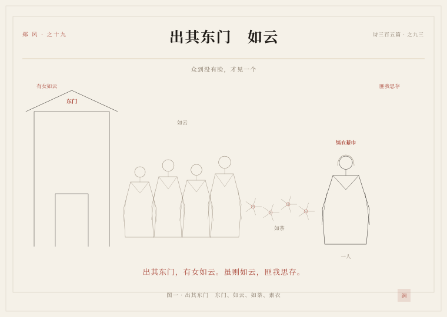
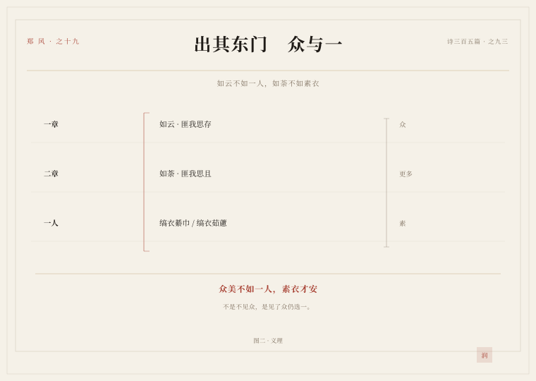

第九十三篇 出其东门
郑风 · 之十九 SJ093
朗读 · 普通话
依经文原文朗读，章次不读出；配古琴底乐，不改速、不加拖腔。全库同一音色（豆包 TTS），非播音员录制。
一 解题
诗三判：
- 谁在说：一个站在东门外的男子。他看见满城女子如云、如荼，却说：都不是我想的；只有那个穿缟衣、系綦巾的人，让我安。
- 说什么事：两章。前章“有女如云”，后章“有女如荼”；前章“缟衣綦巾”，后章“缟衣茹藘”。众越盛，一人越清。
- 为何编在此：郑风之十九。092 写“只二人”，093
写“只一人”。二人是守，一人是选；都是把“多”关在门外。
《毛序》：“《出其东门》，闵乱也。公子五争，兵革不息，男女相弃，民人思保其室家焉。”
朱子《诗集传》：“赋也。如云、美且众也。缟、白色。綦、苍艾色。缟衣綦巾、女服之贫陋者。此人自目其室家也。员、与云同。语辞也。○人见淫奔之女、而作此诗以为、此女虽美且众、而非我思之所存。不如己之室家、虽贫且陋、而聊可以自乐也。是时淫风大行、而其闲乃有如此之人。亦可谓能自好、而不为习俗所移矣。”
本库的看法：《出其东门》是一首把“众”写成“一”的诗。
第一章用“如云”，第二章用“如荼”，都是多；多到看不清脸，只剩颜色。
然后一句“匪我思存”，把满城女子全推开；再一句“缟衣綦巾”，只留一个。这不是没见过美的，是见过了，仍选那一个。
“聊乐我员”“聊可与娱”，不是热烈，是安。
先辨五事：“如云”是众多，不是“云彩”；“如荼”是茅花白而多，不是“苦菜”；“缟”是白色生绢，不是“稿”；“綦”是苍艾色，不是“綦姓”；“员”与“云”同，是语辞，不是“人员”。
二 经文
第一章
出其东门，有女如云。
虽则如云，匪我思存。
缟衣綦巾，聊乐我员。
第二章
出其闉阇，有女如荼。
虽则如荼，匪我思且。
缟衣茹藘，聊可与娱。
分章：二章，章六句。
三 韵读
- 一章：云、存、员，文部；三句一韵。
- 二章：荼、且、娱，鱼部；三句一韵。
读法：文部收鼻，像门内；鱼部开口，像门外。由门内到门外，由众到一。
四 字义与名物
- 东门：城东门。闉阇：曲城、城台；城门外的曲城与台。
- 如云：像云一样多而美。如荼：像茅花一样白而多。
- 匪：非。思存：思念所在。思且：思念所在；且，语辞。
- 缟：白色生绢。綦：苍艾色。巾：头巾。
- 茹藘：茜草，可染绛；这里指绛色衣饰。员：与“云”同，语辞。娱：乐。
五 今译
走出东门，女子多得像云。虽然多得像云，都不是我心里想的人。穿白绢衣、系苍艾色头巾的那一个，才让我安。
走出曲城城台，女子多得像茅花。虽然多得像茅花，都不是我心里想的人。穿白绢衣、配茜草染红的那一个，才可以同乐。
六 章旨
- 一章：写“如云”与“缟衣綦巾”。众美如云，一人素净；多与素，先分成两片。
- 二章：写“如荼”与“缟衣茹藘”。白花更多，红衣更明；众越白，一人越红。
- 总收：如云不如一人，如荼不如素衣。
不是不见众，是见了众仍选一。
七 诗教
- 兴：以“出其东门”起兴。先出门，再看人；门越开，眼越乱。
- 观：观“思存”。满城是色，心里只存一个；“存”不是记得，是留下。
- 群：乱世里男女相弃，能守一个家室，就是“保”；保不是守城，是守人。
- 怨：诗里没有怨，只有选。选得定，怨就无从生。
八 分寸与边界
- 不可把“如云”读成“云彩”。它是众多；一读成天象，东门就成了天空。
- 不可把“如荼”读成“苦菜”。它是茅花白而多；一读成菜，白就变成苦。
- 不可把“缟”读成“稿”。缟是白绢；一读成稿，衣就成纸。
- 不可把“綦”读成姓。它是苍艾色；一读成綦姓，巾就成族谱。
- 不可把“聊”读成“无聊”。聊是且、姑且；一读成无聊，安就成了闷。
九 存疑
- 诗旨：毛序“闵乱，思保室家”；朱子“人见淫奔之女，自守”。一闵一守；本库两存，以“选一”读。
- “如荼”：茅秀；一说“苦菜”。从茅秀，才与“白”相应。
- “綦巾”：苍艾色头巾；一说“綦”为青黑色。两读相近。
- “茹藘”：茜草染绛；一说指“绛色衣”。从染绛，才与“缟衣”对。
- 作者与年代：序系于公子五争之后；朱子以为“人见淫奔之女”。无确证。
十 跨典
- 《礼记·坊记》：“故君子不以色亲人；情疏而貌亲，在小人则穿窬之盗也与。”——众色在前，不以色亲人。
- 《孟子·滕文公下》：“不待父母之命，媒妁之言……则父母国人皆贱之。”——东门如云，礼在门外。
- 《礼记·昏义》：“婚礼者，将合二姓之好。”——“保其室家”不是私昵，是合二姓。
- 《诗本音》：一章云、存、员文部，二章荼、且、娱鱼部，见卷三。
十一 双卡与图
双卡七对：
| 如云（众多） |
如云（云彩） |
| 如荼（茅花白） |
如荼（苦菜） |
| 匪（非） |
匪（土匪） |
| 思存（思念所在） |
思存（存在） |
| 缟（白绢） |
缟（稿） |
| 綦（苍艾色） |
綦（姓） |
| 聊（且、姑且） |
聊（无聊） |

图一 · 出其东门 东门、如云、缟衣

图二 · 出其东门 众、一
读图三处：
- 东门与曲城：图一左城门，右曲城台；门越深，人越杂。
- 如云如荼：图一中段用淡墨衣袂与白花表示“多”，都不画脸；多到没有脸，才见“众”。
- 一件素衣：图一右下缟衣綦巾，独立于众外；素衣不抢色，才留得住。